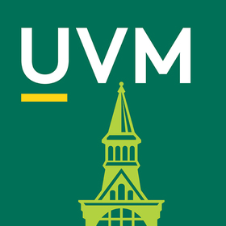

Education

Master of Journalism
The University of Maryland
December 2022
Multi-platform and investigative journalism

Bachelor of Arts
The University of Vermont
May 2020
Environmental Studies
Before pursuing journalism, I worked for the U.S. Forest Service in Oregon and the National Oceanic and Atmospheric Agency in Maryland. I've seen wild fires rip through communities and sea level rise encroach on the last islands of the Chesapeake Bay. Most importantly, I've met the people impacted by these climate-caused calamities. Their stories are vital to understanding the tragedies we face in the natural world, yet they are undertold. My career in environmental journalism seeks these stories and tries to make sense of our future in a changing climate.
Learned and executed fundamentals of trail maintenance, tool upkeep and repair, drove government rigs and led a youth conservation corps group.
Organized editorial meetings and managed written content. Traveled to the 2018 Society of Environmental Journalists conference in Flint, MI, and 2019 conference in Ft. Collins, CO, reported on field workshops for the SEJ newsletter.
Teaching assistant for David Massell's Intro to North American Indian History class. Answered student questions, graded quizzes, papers, and finals, led review sessions, and helped organize class field trips.
Supported environmental literacy training for educators all around the Chesapeake Bay Watershed as well as other NOAA Chesapeake Bay E-Lit projects. Led statistical analysis with GIS software, determining where physical gaps in environmental literacy services may exist.
Fulfilled weekly/bi-weekly news assignments in the Chittenden County area of Vermont, developed and reported on own leads. Worked with professional editors to patch holes in local news deserts.
Organized editorial, design and business teams to ensure magazine’s function and cohesion. Oversaw and orchestrated the publication of print and online editions. Managed budget and recruitment to ensure longevity of the publication, utilized multiple media platforms and techniques to promote the magazine amongst University departments and secure funding.
Supported wildfire mitigation efforts with the district's engine crew. Aided with containment and mop-up on an 8 person hand-crew for the White River Fire; disseminated fire information to public stakeholders and answered relevant questions.
Contributed to infrastructure projects and trail upkeep in Nevada’s wilderness areas. Provided guidance on which trails need prioritizing and how to restructure them. Educated crew mates on the use of cross cut saws and techniques for tree removal.
Primary writing partnership with Lisa Scagliotti of the Waterbury Roundabout. Also covering Anne Arundel and Prince George's counties with the Bay Weekly. Reporting on the environment, education, and businesses. Specialty in feature reporting. Published in the Montpelier Times-Argus, Rutland Herald, Burlington Free Press, the Citizen and Hinesburg Record.
Graduate school fellowship. Collaborate with other fellows on investigative reporting projects, pitch project ideas, incorporate data and fact check news articles.
Multi-platform and investigative journalism
Environmental Studies
Mapmaking with Esri’s ArcGIS.
Command of AP Style writing and reporting.
Photojournalism, trained on Nikon D7500.
Base knowledge of interactive graphic design.
Collaborated on investigative journalism projects.
Thorough knowledge of Chesapeake Bay environmental issues and climate change.
Firm understanding of the fundamentals of trail maintenance.
Experienced guide in cross cutting and designing drainage features.
Firefighting Type II certified, experience on a Type 2 incident.